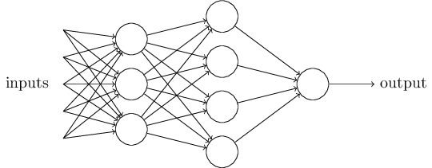
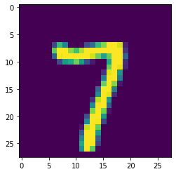

<?xml version = "1.0" encoding = "UTF-8"?>
<xsl:stylesheet version = "1.0" xmlns:xsl = "http://www.w3.org/1999/XSL/Transform">
<xsl:template match = "/"> 
<!doctype html>
<html lang="en">

	<head>
		<meta charset="utf-8">
    
		<title>Memristec Hands-On Tutorial</title>
		<meta name="description" content="NNML">
		<meta name="author" content="Emre Neftci">

		<meta name="apple-mobile-web-app-capable" content="yes">
		<meta name="apple-mobile-web-app-status-bar-style" content="black-translucent">

		<link rel="stylesheet" href="dist/reset.css">
		<link rel="stylesheet" href="dist/reveal.css">
		<link rel="stylesheet" href="nmilab.css">

		<!-- Theme used for syntax highlighted code -->
		<link rel="stylesheet" href="plugin/highlight/monokai.css">

    <script src="jquery.js"></script> 
    <script> 
    $(function(){
      $("#sdlides").load("slides_1_inner.html"); 
    });
    </script> 

  </head>    

	<body>
		<div class="reveal">
			<div class="slides">
        <section data-markdown data-vertical-align-top data-background-color=#B2BA67><textarea data-template>
            <h1> Neuromorphic Computing and Algorithms<br/> </h1>
        </textarea></section>

        <section data-markdown data-vertical-align-top><textarea data-template>
            <h2> Focus of this Lecture:<br/> Machine Learning and Neural Networks for Neuromorphic Engineering </h2>
          
          <p> What you'll learn: </p>
          <ul>
            <li/> Foundations of Neural Networks (Perceptrons, gradient descent)
            <li/> Neural networks and their implementation in Python/PyTorch
            <li/> Basic hardware-aware training using Pytorch and IBM AI hardware kit
          </ul>
        </textarea>
        </section>

       <section data-markdown data-vertical-align-top><textarea data-template>
        ## Machine Learning Approach

          
        <ul>
          <li /> The goal of Machine Learning (ML) is to learn to solve a problem by extracting patterns from raw data 
          <li class=fragment /> The performance of ML models depends heavily on the representation of the data
          <li class=fragment /> Neural Networks are particularly efficient at learning these representations  
        </ul>


        </textarea></section>
        
        <section>
        <h2>Connectionism and Neural Networks</h2><ul>
        
        <li/>At the heart of deep learning, there is an <b>artificial neural network</b></li>
        <li/>Artificial neural networks are a subset of machine learning approaches using networks of simple (neuron-like) units.</li>
        </ul>
        </section>

        <section data-markdown><textarea data-template>
        ## Machine Learning / Artificial Intelligence                                                     
        

        <blockquote>Deep learning is a kind of representation learning, which is in turn a kind of machine learning, which is used for many but not all approaches to AI" </blockquote>
        <p class='ref'>(Goodfellow et al. 2016)</p>

        </textarea>
        </section>


<script>
  //function for evaluation
  function solve()
  {
          let w0 = parseFloat(document.getElementById("w0").value)-50
          let w1 = parseFloat(document.getElementById("w1").value)-50
          let b =  parseFloat(document.getElementById("b").value) -50
          document.getElementById("a11").innerHTML = (eval(w0)*1+eval(w1)*1+eval(b)).toFixed(2)
          document.getElementById("a10").innerHTML = (eval(w0)*1+eval(w1)*0+eval(b)).toFixed(2)
          document.getElementById("a01").innerHTML = (eval(w0)*0+eval(w1)*1+eval(b)).toFixed(2)
          document.getElementById("a00").innerHTML = (eval(w0)*0+eval(w1)*0+eval(b)).toFixed(2)
          document.getElementById("y11").innerHTML = (((eval(w0)*1+eval(w1)*1+eval(b))>0)*1)
          document.getElementById("y10").innerHTML = (((eval(w0)*1+eval(w1)*0+eval(b))>0)*1)
          document.getElementById("y01").innerHTML = (((eval(w0)*0+eval(w1)*1+eval(b))>0)*1)
          document.getElementById("y00").innerHTML = (((eval(w0)*0+eval(w1)*0+eval(b))>0)*1)
          document.getElementById('w0val').innerHTML=eval(w0).toFixed(2); 
          document.getElementById('w1val').innerHTML=eval(w1).toFixed(2); 
          document.getElementById('bval').innerHTML =eval(b).toFixed(2); 
        }

</script>


        <section data-markdown data-vertical-align-top data-background-color=#B2BA67><textarea data-template>
            <h1> Neural Network Basics: The Perceptron<br/> </h1>
        </textarea></section>

        <section>
        <h2>The First Artificial Neuron</h2><ul>
        <li><p>In 1943, McCulloch and Walter Pitts propose the first artificial neuron, the Linear Threshold Unit. </p>
        
        </li>
        <li>In the Linear Threshold Unit, $f$ is a step function: $f(x) = 1$ if $x&gt;0$
        </li>
        <li>"Modern" artificial neurons are similar, but $f$ is typically a sigmoid or rectified linear function</li>
        </ul>
        </section>

        <section>
        <h2>Basic Mathematical Model of the Artificial Neuron</h2>
        <div class=row>
        <div class=column>
        
        </div>
        <div class=column>
        <ul>
        <li>$x_i$  is the state of the input neurons</li>
        <li>$w_i$ is the weight of the connection</li>
        <li>$b$ is a bias</li>
        <li>The total input to the neuron is: $ a = \sum_i w_i x_i +b $</li>
        <li>The output of the neuron is: $ y = f(a) $</li>
        <li>where $f$ is the activation function</li>
        </ul>
        </div>
        </div>
        </section>

        <section data-markdown><textarea data-template>
        <h2>The Perceptron</h2>
        
        <blockquote>
        
        </blockquote>
        <ul>
          <li/> Further reading: <a href="https://news.cornell.edu/stories/2019/09/professors-perceptron-paved-way-ai-60-years-too-soon">Professor’s perceptron paved the way for AI – 60 years too soon </a>
        </ul>
        </textarea></section>


        <section>
        <h2>The Perceptron</h2>
        <ul>
          <li> The Perceptron is a special case of the artificial neuron where:
        $$
        \begin{eqnarray}
        \mbox{y} & = & \begin{cases}
              -1 & \mbox{if } a = \sum_j w_j x_j + b \leq 0  \\\\
              1 & \mbox{if } a = \sum_j w_j x_j + b > 0
              \end{cases}
        \end{eqnarray}
        $$</li>
        
        <li> Three inputs $x_1$, $x_2$, $x_3$ with weights $w_1$, $w_2$, $w_3$, and bias $b$</li>
        </ul>
        </section>

        <section>
          <h2> Perceptron Example</h2>
          <ul>
            <li/> Like McCulloch and Pitts neurons, Perceptrons can be hand-constructed to solve simple logical tasks
            <li/> Let's build a "sprinkler" that activates only if it is dry and sunny.
            <li/> Let's assume we have a dryness detector $x_0$ and a light detector $x_1$ (two inputs)
            <li/> Find $w_0$, $w_1$ and $b$ such that output $y$ matches target $t$
          </ul>


        

        
        <div class=row>
        <div class=column>
        
        </div>
        <div class=column>
          <table>
          <thead>
          <tr>
          <th>Sunny</th>
          <th>Dry</th>
          <th>$a$</th>
          <th>$y$</th>
          <th>$t$</th>
          </tr>
          </thead>
          <tbody>
          <tr>
          <td>1 (yes)</td>
          <td>1 (yes)</td>
          <td> <div id="a11"></div></td>
          <td> <div id="y11"></div></td>

          <td>1</td>
          </tr>
          <tr>
          <td>1 (yes)</td>
          <td>0 (no)</td>
          <td> <div id="a10"></div></td>
          <td> <div id="y10"></div></td>

          <td>0</td>
          </tr>
          <tr>
          <td>0 (no)</td>
          <td>1 (yes)</td>
          <td> <div id="a01"></div></td>
          <td> <div id="y01"></div></td>
          <td>0</td>
          </tr>
          <tr>
          <td>0 (no)</td>
          <td>0 (no)</td>
          <td> <div id="a00"/></div></td>
          <td> <div id="y00"/></div></td>
          <td>0</td>
          </tr>
          </tbody>
          </table>
        </div>
        </div>

            <table border="1">
              <tr>
                <td>$w_0 =$ <span id=w0val>0</span></td>
                <td>$w_1 =$ <span id=w1val>0</span></td>
                <td>$b =$   <span id=bval>0</span></td>
              </tr>
              <tr>
                <td colspan="1"><input type="range" min="-50." max="100." step=0.01  onchange="solve();" id="w0"  /></td>
                <td colspan="1"><input type="range" min="-50." max="100." step=0.01  onchange="solve();" id="w1"  /></td>
                <td colspan="1"><input type="range" min="-50." max="100." step=0.01  onchange="solve();" id="b"  /></td>
              </tr>
            </table>


        </section>


        <section data-markdown><textarea data-template>
        ## The Perceptron Learning Rule
        
        <p class=ref>(Bishop, 2006 Pattern Recognition and Machine Learning)</p>

        - Perceptron convergence theorem: if the training dataset is linearly separable, then the perceptron learning rule is guaranteed to find an exact solution
        <p class=ref>(Rosenblatt, 1962, Principles of Neurodynamics: Perceptrons and the Theory of Brain Mechanisms)</p>
        </textarea></section>

        <section data-markdown><textarea data-template>
        ## Cost Functions

        <ul>
        <li/> The Cost (Error) function returns a number representing how well a model performed. 
        <li/> Perceptrons: Cost function = Number of Misclassified Samples
        <li/> Other common cost functions are 
          <ul>
          <li/> Mean Squared Error: $  C_\text{MSE}  = \frac{1}{2N} \sum_{n \in \text{train}} (\mathbf{y}^n - \mathbf{t}^n) ^2 $ 
          <li/> Cross-Entropy: $  C_{XENT} = - \frac1N \sum_{n \in \text{train}} \sum_k y_{k}^n  \log t_{k}^n $
          </ul>
        <li /> The objective is to minimize the cost function. 
        <li /> Cost functions can be minimized using an optimization algorithm
        </ul>
        </textarea></section>


        <section data-markdown><textarea data-template>
        ## Optimization Algorithm Gradient Descent
          
          Example: Find $x$ that minimizes $C(x) = x^2$

          

          - Incremental change in $\Delta x$:
          $$
          \begin{eqnarray} 
            \Delta C \approx \underbrace{\frac{\partial C}{\partial x}}_{\text{=Slope of }C(x)} \Delta x 
          \end{eqnarray}
          $$
          With $\Delta x = - \eta \frac{\partial C}{\partial x}$, $\Delta C \approx - \eta \left( \frac{\partial C}{\partial x} \right)^2$

          - Gradient Descent for finding the optimal $x$: 
          $
          \begin{eqnarray} 
            x \leftarrow x - \eta \frac{\partial C}{\partial x}
          \end{eqnarray} 
          $
        </textarea></section>


        <section data-markdown data-vertical-align-top data-background-color=#B2BA67><textarea data-template>
            <h1> Artificial Neural Networks<br/> </h1>
        </textarea></section>
        <section data-markdown><textarea data-template>
        ## Linear separability (Reminder)                   
          A perceptron is equivalent to a decision boundary.
          - A straight line can separate blue vs. red
          
          - There is no straight line that can separate blue vs. red <!-- .element: class="fragment" -->
          
          <p class="pl">Problems where a straight line can separate two classes are called <em>Linearly Separable</em></p>
        </textarea></section>


        <section data-markdown><textarea data-template>
        ## Limitations of Perceptrons

        The limitation of a Perceptron to linearly separable problems caused its downfall:
        
        <p class=ref> Minsky and Papert, 1969 </p>

        </textarea></section>


        <section data-markdown><textarea data-template>
        ## XOR can be solved with an intermediate perceptron


        <div class=row>
          <div class=column>
          
          </div>
          <div class=column>
          
          </div>
        </div>

        - We need an intermediate unit that is on only when $x_1$ and $x_2$ are both on.
        </textarea></section>


        <section data-markdown><textarea data-template>
        ## A Neural Network Solving XOR

        - Find the parameters in the following network:
        <div class=row>
        <div class=column>
        
        </div>
        <div class=column>
        <table>
        <tbody><tr bgcolor="#ddeeff" align="center">
        <td colspan="2"><b>INPUT</b></td>
        <td><b>Y</b>
        </td></tr>
        <tr bgcolor="#ddeeff" align="center">
        <td>A</td>
        <td>B</td>
        <td>A XOR B
        </td></tr>
        <tr bgcolor="#ddffdd" align="center">
        <td>0</td>
        <td>0</td>
        <td>0
        </td></tr>
        <tr bgcolor="#ddffdd" align="center">
        <td>0</td>
        <td>1</td>
        <td>1
        </td></tr>
        <tr bgcolor="#ddffdd" align="center">
        <td>1</td>
        <td>0</td>
        <td>1
        </td></tr>
        <tr bgcolor="#ddffdd" align="center">
        <td>1</td>
        <td>1</td>
        <td>0
        </td></tr></tbody>
        </table>
        </div>
        
        <div class=fragment><p class=pl> The strategy of automatically extending networks with intermediate units is the main idea of representation learning </p></div>

        </textarea></section>


        <section data-markdown><textarea data-template>
        ## Neural Network

        - We can connect Perceptrons together to form a multi-layered network.
        
        <ul>
          <li/> If a neuron produces an input, it is called an <em>input neuron</em>
          <li/> If a neuron's output is used as a prediction, we will call it an <em>output neuron</em>
          <li/> If a neuron is neither and input or an output neuron, it is a <em>hidden neuron</em>
        </ul>
        - Increased level of abstraction from layer to layer
        - Also called Multilayer Perceptrons (although units are not always Perceptrons)

        </textarea></section>


        <section data-markdown><textarea data-template>
        ## Multiple Linear Layers are Equivalent to one Single Layer

        <ul>
          <li/> A linear transformation is of the type:
            $$
            \mathbf{y} = W \mathbf{x}  
            $$
          <li/> Linear networks are mathematically tractable, so why not build multilayer linear networks?
            $$
            \mathbf{y}^{(2)} = {W}^{(2)} ({W}^{(1)} \mathbf{x}^{(1)} ) 
            $$
          <li class=fragment /> Such a network is equivalent to a wide single layer network
            $$
            \begin{split}
            \mathbf{y}^{(2)} &= V \mathbf{x}^{(1)}  \\
            V &= W^{(2)} W^{(1)} 
            \end{split}
            $$
          <li class=fragment /> Non-linearities preserve the composition of layers, and thus have more representational power
            $$
            \begin{split}
            \mathbf{y}^{(2)} &= \sigma(W^{(2)}\sigma(W^{(1)}\mathbf{x}^{(1)} ) ) 
            \end{split}
            $$

        </ul>

        </textarea></section>

        <section data-markdown><textarea data-template>
        ## Deep neural networks
          - Before:
          <blockquote>
            How many hidden layers and how many units per layer do we need? The answer is at most two
          </blockquote>
          <p class=ref> Hertz, <em>et al.</em> 1991</p>

          - Now:
          <blockquote>
            
          </blockquote>
            <p class=ref> Szegedy <em>et al.</em> 2014 </p>

            <p class=pl> Deeper networks tend to have more representational power </p>

        </textarea></section>


        <section data-markdown><textarea data-template>
        ## Credit Assignment Problem

        Multilayer (deep) networks are more powerful: how can one train multilayer networks?
        

        Two problems:
        - Perceptrons' discontinuity 
        - Credit assignment: which hidden unit weight should we modify to reach a target output? 

        </textarea></section>

        <section data-markdown><textarea data-template>
        ## Continuous Output Neurons (Sigmoid Neuron)

        Neurons in deep neural networks are similar to Perceptrons, but  with a continuous activation function

        <div class="row">
          <div class="column">
            <p>Threshold unit (Perceptron)</p>
              $$
              y = \Theta(a) = \begin{cases} -1 & \mbox{if } a \leq 0 \\  1 & \mbox{if } a > 0 \end{cases}
              $$

          </div>
          <div class="column">
            <p> Sigmoid unit</p>
              $$
              y = \sigma(\text{a}) = \frac{1}{1+e^{-a}}
              $$
          </div>
        </div>

        <div class="row">
        <div class="column">
              
          </div>
          <div class="column">
              
          </div>
        </div>

          $$
            a = \sum_j w_j x_j + b
          $$

        - A function is continuous if the curve can be drawn "without lifting the pen"

        </textarea></section>

        <section data-markdown><textarea data-template>
        ## Single Layer Network with Sigmoid Units

        Weight matrix: $W^{(1)} \in \mathbb{R}^{N\times M}$ (meaning $M$ inputs, $N$ outputs)
         
        `$$
        \begin{eqnarray}
        y^{(1)}_i &=& \sigma(\underbrace{\sum_j W^{(1)}_{ij} x_j}_{a_i^{(1)}}) \\
        \end{eqnarray}
        $$`

        - MSE cost function, assuming a single data sample $\mathbf{x}\in\mathbb{R}^{M} $, and target vector $\mathbf{t}\in\mathbb{R}^{N}$

        `$$
        C_{MSE} = \frac{1}{2} \sum_i(y^{(1)}_i - t_i)^2
        $$`

        - Gradient w.r.t. $W^{(1)}$ (in scalar form):
        `$$
        \frac{\partial }{\partial W^{(1)}_{ij}} C_\text{MSE}=  \frac1N (y^{(1)}_i - t_i) \sigma'(a^{(1)}_i) x_j
        $$`


        </textarea></section>

        <section data-markdown><textarea data-template>
        ## Single Layer Network with Sigmoid Units

        <p> Neural networks operations are generally written in Matrix form</p>

        <div class=row>
        <div class=column>
          <center>Scalar Form (one sample)</center>
        $$
        \begin{split}
        a_i^{(1)} &= \sum_j W^{(1)}_{ij} x_j, \quad y^{(1)}_i = \sigma(a_i^{(1)}) \\
        \delta_i^{(1)} &= \frac{1}{N^{s}} (y^{(1)}_i - t_i) \sigma'(a^{(1)}_i)\\
        \Delta W_{ij} &=  -\eta \delta_i x_j
        \end{split}
        $$
        </div>
        <div class=column>
          <center>Matrix Form ($N^{s}$ samples)</center>
          <div class=fragment>
          $$
          \begin{split}
          A^{(1)} & = X W^{(1),T}, \quad 
          Y^{(1)}  = \sigma(A^{(1)}) \\ 
          \end{split}
          $$
          </div>
          <div class=fragment>
          $$
          \begin{split}
          \delta &= \frac{1}{N^{s}} (Y^{(1)} - T) \odot \sigma'(A^{(1)}) \\
          \end{split}
          $$
          </div>
        <div class=fragment>
        $$
        \begin{split}
        \Delta W & =  - \eta \delta^T \mathbf{X} \\
        \end{split}
        $$
        </div>
        </div>
        </div>
        $$
        W \leftarrow W + \Delta W 
        $$
        <ul>
          <li /> $\delta$ $\in \mathbb{R}^{N^{s}\times N}$, $X$ $\in \mathbb{R}^{N^{s} \times M}$, and dimension of $\Delta W$ must be same as $W$!
          <li /> Implement it here (Optional):
        </ul>

        [](https://colab.research.google.com/drive/1xQiNcjf-O88vi_09R5Zntv_gK2zB7MMh?usp=sharing)

        </textarea></section>


        <section data-markdown><textarea data-template>
        ## Two Layer Network with Sigmoid Units

        - Two layers means we have two weight matrices $W^{(1)}$ and $W^{(2)}$
        - $W^{(1)} \in \mathbb{R}^{N^{(1)}\times M}$, $W^{(2)} \in \mathbb{R}^{N^{(2)}\times N^{(1)}}$
        - The output is a composition of two functions:

        $$
        \begin{eqnarray}
        \mathbf{y}^{(1)} &=& \sigma(W^{(1)} \mathbf{x} ) \\\\
        \mathbf{y}^{(2)} &=& \sigma(W^{(2)} \mathbf{y}^{(1)} ) \\\\
        \end{eqnarray}
        $$
        <ul>
          <li class=fragment /> Cost function $ C_{MSE} = \frac{1}{2N^{s}} \sum_{i=1}^{N^{(2)}}(y^{(2)}_i - t_i)^2 $
            <li class=fragment /> Gradient wrt $W^{(2)}$ is: $ \frac{\partial }{\partial W^{(2)}_{ij}} C_\text{MSE}=  \underbrace{(y^{(2)}_i - t_i) \sigma'(a^{(2)}_i)}_{\delta^{(2)}_i} y^{(1)}_j $
              <li class=fragment /> Gradient wrt $W^{(1)}$ is: $ \frac{\partial}{\partial { W_{jk}^{(1)}}}  C_{\text{MSE}} = \underbrace{(\sum_i \delta_i^{(2)}  W^{(2)}_{ij}) \sigma'(a^{(1)}_j)}_{backpropagated\, error\, \delta^{(1)}_{j}} x_k $
          <li class=fragment /> This is a special case of the gradient backpropagation algorithm
        </ul>

        </textarea></section>


        <section data-markdown><textarea data-template>
        ## The Gradient Back-Propagation Algorithm

        

        1. Forward-propagate to compute $y^{(k)}$ for all layers $k$
        2. Compute loss and error
        3. Back-propagate error through network, *i.e* compute all $\mathbf{\delta}^{(k)}$

        </textarea></section>


        <section data-markdown data-background-color=#BBBBBB><textarea data-template>
        ## The Gradient BP algorithm (for your reference)

        <div style='font-size:24px;text-align:left;' >
          <p>The task of learning is to minimize a cost function $\mathcal{L}$ over the entire dataset.
        In a neural network, this can be achieved by gradient descent, which modifies the network parameters $\mathbf{W}$ in the direction opposite to the gradient:
        $$
        \begin{split}
          W_{ij} \leftarrow W_{ij} - \eta \Delta W_{ij},  & \text{where } \Delta W_{ij} =
         \Dp{\mathcal{L}}{W_{ij}} =
         \Dp{\mathcal{L}}{y_i} 
         \Dp{y_i}{ a_i }       
         \Dp{a_i}{W_{ij}}      
        \end{split}
        $$
        with $a_i = \sum_j W_{ij} x_j$ the total input to the neuron, $y_i$ is the output of neuron $i$, and $\eta$ a small learning rate.
        The first term is the error of neuron $i$ and the second term reflects the sensitivity of the neuron output to changes in the parameter.
        In multilayer networks, gradient descent is expressed as the BP of the errors starting from the prediction (output) layer to the inputs.
        Using superscripts $l=0,...,L$ to denote the layer ($0$ is input, $L$ is output):

        `$$
        \frac{\mathrm{\partial}}{\mathrm{\partial} W^{(l)}_{ij}} \mathcal{L} =
        \delta_{i}^{(l)} y^{(l-1)}_j,\text{ where }\delta_{i}^{(l)} = \sigma'\left(
        a_i^{(l)} \right) \sum_k \delta_{k}^{(l+1)} W_{ik}^{\top,(l)},
        $$`

        where $\sigma'$ is the derivative of the activation function, and $\delta_{i}^{(L)}=\Dp{\mathcal{L}}{y_i^{(L)}}$ is the error of
        output neuron $i$ and $y_{i}^{(0)}=x_i$ and $\top$ indicates the transpose.
        Learning is typically carried out in forward passes (evaluation of the neural network activities) and backward passes (evaluation of $\delta$s).
        </p>
        </div>
        </textarea></section>

        <section data-markdown><textarea data-template>
        ## The Gradient Back-Propagation Algorithm
        
        </textarea></section>

        <section>

        <iframe data-src="http://playground.tensorflow.org/" width=95%  style='max-height:720px;height:720px;max-width:100%;'></iframe>
        </section>

        <section data-markdown><textarea data-template>
        ## Neural Networks with PyTorch

        - PyTorch is a machine learning framework that facilitates the implementation of Deep Learning

        - Other tools such as Tensorflow or Theano have a similar purpose, but PyTorch is more versatile and easier to use.

        - To use pytorch, remember to import it:
        <pre><code class="Python" data-trim data-noescape> import torch </code></pre>

        - Follow-along notebook
        [](https://drive.google.com/open?id=1botgh24In3QFyMc9AmezPszgt2ntJ-OL)

        - PyTorch is one out of several other ML frameworks (PyTorch, Tensorflow/Keras, Jax). PyTorch arguably the easiest to use and is <a href="https://pytorch.org/blog/PyTorchfoundation/?utm_source=twitter&utm_medium=organic_social&utm_campaign=foundation3a" >belongs to the linux foundation</a> (open source)
        </textarea></section>

        <section data-markdown><textarea data-template>
        ## Tensor

        - The tensor is the basic data type of Pytorch (and many other tools likes tensorflow)
        
        - A tensor is a multi-dimensional array
        > For example, a color image could be encoded as a 3D tensor with dimensions of width, height, and color plane.

        - Apart from dimensions, a tensor is characterized by the type of its elements (integer, float, double, byte, boolean etc.).
        </textarea></section>
        <section data-markdown><textarea data-template>

        ## Tensor Creation

        Tensors can be created like numpy arrays
        
        <ul>
        <li > Numpy
        </ul>

        <pre><code class="Python" data-trim data-noescape>
        a = np.array([[1,2,3],[3,2,1]])
        </code></pre>
        
          
        <div class=fragment >
        <ul>
        <li > PyTorch
        </ul>
        <pre><code class="Python" data-trim data-noescape>
        b = torch.FloatTensor([[1,2,3],[3,2,1]])
        b = torch.FloatTensor(a) #equivalent
        </code></pre>
        </div>

        </textarea></section>

        <section data-markdown><textarea data-template>

        ## Tensor Creation

        - Tensors can also be converted from a numpy array

        <pre><code class="Python" data-trim data-noescape>
        n = np.zeros(shape=(3, 2))
        c= torch.tensor(n)
        </code></pre>

        </textarea></section>
        <section data-markdown><textarea data-template>

        ## Tensor Operations
        There are many operations that can be performed on tensors. See http://pytorch.org/docs/. Some examples below

        - Addition
        <pre><code class="Python" data-trim data-noescape>
        b + b
        </code></pre>

        - Multiplication
        <pre><code class="Python" data-trim data-noescape>
        b*b
        </code></pre>

        </textarea></section>

        <section data-markdown><textarea data-template>
        ## Tensor Operations (continued)
        There are many operations that can be performed on tensors. See http://pytorch.org/docs/. Some examples below

        <ul>
        <li/> Transpose

        <pre><code class="Python" data-trim data-noescape>
        b.transpose(0,1) #flips axes 0 and 1
        </code></pre>

        <li/> Matrix multiplication

        <pre><code class="Python" data-trim data-noescape>
        torch.mm(b,b.transpose(0,1))
        b@b.transpose(0,1)
        </code></pre>

        </ul>
        </textarea></section>

        <section data-markdown><textarea data-template>

        ## Graph Representation of an Expression
        Pytorch and other frameworks represent a function using a graph

        

        <pre><code class="Python" data-trim data-noescape>
        v1 = torch.tensor([1.0, 1.0], requires_grad=True)
        v2 = torch.tensor([2.0, 2.0])
        v_sum = v1 + v2
        v_res = (v_sum*2).sum()
        </code></pre>

        </textarea></section>


        <section data-markdown><textarea data-template>
        ## Automatic Differentiation

        <ul>

        <li/> A key feature of machine learning frameworks is automatic differentiation
        <li/> With automatic differentation, the gradients are computed automatically across a set of operations
          <li/> Once a backward operation is called on a node, the gradients of all <i>leaf</i> nodes and parameters in the expression are numerically computed

        <pre><code class="Python" data-trim data-noescape>
        v_res.backward() #this command computes the gradient
        v1.grad # returns tensor([2., 2.])
        </code></pre>

        <li class=fragment /> The gradient of v2 is None because we did not enable requires_grad

        <pre><code class="Python" data-trim data-noescape>
        v2.grad # returns None
        </code></pre>

        <pre><code class="Python" data-trim data-noescape>
        v2.requires_grad #returns False
        </code></pre>
        </ul>

        </textarea></section>

        <section data-markdown><textarea data-template>
        ## GPUs and Tensors
        <ul>
        <li/> By default, tensors are stored in the CPU (main memory)
        <pre><code class="Python" data-trim data-noescape>
        b.device
        </code></pre>
        <li/> GPUs can be >100x faster on certain operations compared to CPUs

        <li/> Tensors can be moved to the GPU using the cuda() function
        <pre><code class="Python" data-trim data-noescape>
        b_cuda = b.cuda(); b_cuda = b.to('cuda') #Both have the same effect
        </code></pre>
        <li/> If you get a runtime error, it means you didn't request for a gpu. go to Runtime> Change Runtime Type>Hardware accelerator and choose GPU, then SAVE
        
        <li/> All operations must occur on the same device. For example, you cannot add a cuda tensor to a cpu tensor (you need to cast it to cpu first).
        </ul>


        </textarea></section>
        <section data-markdown><textarea data-template>
        ## Neural Network Building Blocks: Modules

        <ul>

        Up to now, nothing was specific for neural networks:
        <li/> Machine learning frameworks can be used for all types of computations

        PyTorch has predefined modules for constructing neural networks
        <li/> All neural network building blocks are PyTorch modules
        <pre><code class="Python" data-trim data-noescape>
        torch.nn.Module
        </code></pre>
        <li/> Modules are containers for functions, tensors and parameters
        <li/> Modules can be called like functions. (but to call them, you need to implement the forward function)

        <pre><code class="Python" data-trim data-noescape>
        my_module = torch.nn.Module()
        my_module() #returns NotImplementedError
        my_module.forward() #same as above
        </code></pre>
        </ul>
        </textarea></section>

        <section data-markdown><textarea data-template>
        ## Example: the linear module
        - nn.Linear is a class that implements a module 
        - For example the nn.Linear module defines the linear transformation $$y = Wx + b$$

        <pre><code class="Python" data-trim data-noescape>
        lin = torch.nn.Linear(in_features = 2, out_features = 5) 
        x = torch.FloatTensor([1, 2])
        y = lin(x)
        </code></pre>

        - The .parameters() function returns all parameters of the module

        </textarea></section>

        <section data-markdown><textarea data-template>

        ## Fully-connected Feedforward Networks (MLP)

        

        - Consists of fully connected (dense) layer.
        - Implements the function: $$ \mathbf{y} = \sigma \left( W \mathbf{x} + \mathbf{b}\right) $$
            - $W$ are trainable weights
            - $\mathbf{b}$ are trainable biases
            - $\sigma$ is an activation function

        <pre><code class="Python" data-trim data-noescape>
          a = torch.nn.Linear(in_channels=10, out_channels=5)
          y = torch.sigmoid(a)
        </code></pre>
        </textarea></section>

        <section data-markdown><textarea data-template>
        ## Activation Functions

        <div class=row >
          <div class=column >
            Sigmoid $ \sigma(z) = \frac{1} {1 + e^{-z}} $
            
            <pre><code class="Python" data-trim data-noescape> torch.sigmoid </code></pre>
          </div>

          <div class=column >
            Rectified Linear $ y = [a]^+ = \begin{split}Relu(a) = \begin{matrix}  a & a > 0 \\ 0 & a <= 0 \end{matrix}\end{split} $
            
            <pre><code class="Python" data-trim data-noescape> torch.relu </code></pre>

          </div>

        </div>
        <div class=row>


        <div class=column >
        Tanh $ tanh(z) = \frac{e^{z} - e^{-z}}{e^{z} + e^{-z}} $
        
            <pre><code class="Python" data-trim data-noescape> torch.sigmoid </code></pre>
        </div>

        <div class=column >
        Step $ \begin{split}\Theta(z) = \begin{matrix} 1 & z>0 \\ 0 & z<0 \end{matrix}\end{split} $
        
            <pre><code class="Python" data-trim data-noescape> torch.sign </code></pre>
        </div>

        </div>

        </textarea></section>


        <section data-markdown><textarea data-template>

        ## PyTorch Neural Network Bulding Block: Module
        Modules can be composed to build a neural network.
        The simplest method is the "sequential" mode that chains the operations

        <pre><code class="py" data-trim data-noescape>
        my_first_nn = torch.nn.Sequential(
              torch.nn.Linear(2, 5),
              torch.nn.Sigmoid(), #this is an activation function
              torch.nn.Linear(5, 20),
              torch.nn.Sigmoid(),
              torch.nn.Linear(20, 2))
        </code></pre>

        Sequential returns a module, so it can be called as a function
        <pre><code class="py" data-trim data-noescape>
        my_first_nn(x)
        </code></pre>

        - Note that output dimensions of layer l-1 must match input dimensions of current layer l!


        </textarea></section>

        <section data-markdown data-vertical-align-top data-background-color=#B2BA67><textarea data-template>
            <h1> Fully Connected Networks <br/> </h1>
        </textarea></section>

        <section data-markdown data-vertical-align-top><textarea data-template>
            <h2> Key Ingredients of a Neural Network Program </h2>

            <ol>
              <li> A model with free (trainable) parameters</li>
              <li> A performance measure (loss function)</li>
              <li> An optimization algorithm </li>
              <li> A dataset </li>
            </ol>

        </textarea></section>

         <section data-markdown><textarea data-template>
        ## Sequential Module
        Modules can be composed to build a neural network.
        The simplest method is the "sequential" mode that chains the operations

        <pre><code class="py" data-trim data-noescape>
        my_first_nn = torch.nn.Sequential(torch.nn.Linear(2, 5),
            torch.nn.Sigmoid(), #this is an activation function
            torch.nn.Linear(5, 20),
            torch.nn.Sigmoid(),
            torch.nn.Linear(20, 2))
        </code></pre>

        Sequential returns a module, so it can be called as a function
        <pre><code class="py" data-trim data-noescape>
        my_first_nn(x)
        </code></pre>

        - Note that output dimensions of layer l-1 must match input dimensions of current layer l!

        [](https://drive.google.com/open?id=1botgh24In3QFyMc9AmezPszgt2ntJ-OL)


        <pre><code class="py" data-trim data-noescape>
        my_first_nn
         Sequential(
           (0): Linear(in_features=3, out_features=5, bias=True)
           (1): Sigmoid()
           (2): Linear(in_features=5, out_features=20, bias=True)
           (3): Sigmoid()
           (4): Linear(in_features=20, out_features=2, bias=True)
         )
        </code></pre>
        </textarea></section>

        <section data-markdown><textarea data-template>
        ## PyTorch Neural Network Building Block: Module

        - Sequential works well for fully feedforward networks. 
        - In most cases, however, neural networks are implemented explicitely:

<pre><code class="Python" data-trim data-noescape>
class MySecondNetwork(torch.nn.Module):
  def __init__(self, n1, n2, n3, num_classes):
    super(MySecondNetwork, self).__init__()
    self.layer1 = torch.nn.Linear(n1,n2)
    self.layer2 = torch.nn.Linear(n2,n3)
    self.layer3 = torch.nn.Linear(n3,num_classes)
    self.sigmoid = torch.nn.Sigmoid()

  def forward(self, data):
    y1 = self.sigmoid(self.layer1(data))
    y2 = self.sigmoid(self.layer2(y1))
    y3 = self.sigmoid(self.layer3(y2))
    return y3

my_second_net = MySecondNetwork(3,10,5,2)
my_second_net(x) # x has shape [M,3]
</code></pre>
</textarea></section>

<section data-markdown><textarea data-template>
## Loss functions and optimizers

- The loss function defines our objective. It is generally a **scalar** function.
- An optimizer defines the strategy to minimize the loss function

- Common loss functions for regression and classification:
  - nn.MSELoss: Mean-Squared Error, default for regression tasks
  $$ L_{MSE} = \frac1N \sum_{n} \sum_i (y_{ni}-t_{ni})^2 $$
  - nn.CrossEntropyLoss: Default for classification tasks
  $$L_{XENT} = - \frac1N \sum_n \sum_i t_{ni}  \log y_{ni}$$
</textarea></section>
<section data-markdown><textarea data-template>

## Loss Function Example
- Mean-Squared Error (MSE)

<pre><code class="Python" data-trim data-noescape>
mse_loss = torch.nn.MSELoss()
target = torch.FloatTensor([[1.,0.,0.],[0.,0.,1.]])
loss = mse_loss(my_first_nn(data), target)
</code></pre>

- Cross Entropy
<pre><code class="Python" data-trim data-noescape>
xent_loss = torch.nn.CrossEntropyLoss()
target = torch.LongTensor([0,2])
loss = xent_loss(my_first_nn(data), target)
</code></pre>
</textarea></section>


<section data-markdown><textarea data-template>
## Loss functions and optimizers

- The loss function defines our objective 
- An optimizer that defines the strategy to minimize the loss function (thus reach the objective)

- Common optimizers:
<ul>
<li /> SGD : A vanilla stochastic gradient descent algorithm
<pre><code class="Python" data-trim data-noescape> torch.optim.SGD </code></pre>
<li /> RMSprop : An optimizer that normalizes the gradients using moving root-mean-square averages
<pre><code class="Python" data-trim data-noescape> torch.optim.RMSProp </code></pre>
<li /> Adam : An adaptive gradients optimizer, works best in many cases
<pre><code class="Python" data-trim data-noescape> torch.optim.Adam </code></pre>
</ul>

<ul>
  <li/> The optimizer function takes network parameters and learning rate as mandatory arguments
<pre><code class="Python" data-trim data-noescape>
opt = torch.optim.SGD(my_first_nn.parameters(), lr=1e-3)
</code></pre>
</ul>
</textarea></section>
<section data-markdown><textarea data-template>

        ## The Training Loop
        All the parts of the machine learning algorithm come together in the training loop, *i.e.* proceeding iteratively over data samples and making gradient updates.
        1. Create a neural network, cost function and optimizer
        2. In a loop:
            1. Compute the neural network loss
            2. Take the gradient of the loss using .backward()
            3. Run one optimization step (= apply the gradient)

        <pre><code class="Python" data-trim data-noescape>
        def train_step(data, tgt, net, opt_fn, loss_fn):
            y = net(data)
            loss = loss_fn(y, tgt)
            loss.backward()
            opt_fn.step()
            opt_fn.zero_grad()
            return loss
        </code></pre>

        <pre><code class="Python" data-trim data-noescape>
        for i in range(100):
            print(train_step(b, t, my_first_nn, opt, mse_loss))  
        </code></pre>
        </textarea></section>


        <section data-markdown><textarea data-template>

        ## Training with Minibatches
        - Neural networks are trained in *minibatches* to parallelize the computations (GPUs are good at that)
        - A dataset is splitted randomly into batches of equal size.
        - A minibatch of data is simply provided as a higher order tensor. For example
          - A data having 4 features would be a tensor with shape [4]
          - A minibatch of $N$ such samples would be a tensor with shape [N,4]
        - It is necessary to have a function that "slices" and "packages" minibatches. In PyTorch, this is most easily done with **data loaders**.
        </textarea></section>

        <section data-markdown><textarea data-template>
        ## Dataloaders
        - Data loaders are PyTorch classes to help loading, slicing, shuffling, pre-processing and iterating over the data.
        - MNIST is a dataset consisting of hand-written digits <a href="http://yann.lecun.com/exdb/mnist/" target="_blank">(http://yann.lecun.com/exdb/mnist/)</a>
        - MNIST is large enough so that batching may be necessary
        - The following code downloads MNIST and builds a dataloader. The data loader will dynamically slicing the 60k digits in minibatches of 100, shuffle it (shuffle), and pre-processes it (transform)

        <pre><code class="Python" data-trim data-noescape>
from torchvision import datasets, transforms

train_set = datasets.MNIST(
  './data',
  train=True, download=True,
  transform=transforms.Compose([ #Preprocessing
    transforms.ToTensor(),
    transforms.Normalize((0.1307,), (0.3081,))
    ]),
  )
train_loader = torch.utils.data.DataLoader(train_set, batch_size=100, shuffle=True)
        </code></pre>

        - Later in this class, we will learn how to build our own data loader from raw data
        - Datasets are generated separated in training, validation and test sets. Train=true here builds the train set. Train=False build the test set

        </textarea></section>

        <section data-markdown><textarea data-template>
        ## Dataloaders (one hot transform)
        - If the labels are categorical and your loss requires a target vector, you need to use a one hot encoding. Use the following code:


        <pre><code class="Python" data-trim data-noescape>
class toOneHot(object):
  def __init__(self, num_classes):
      self.num_classes = num_classes

  def __call__(self, integer):
      y_onehot = torch.zeros(self.num_classes)
      y_onehot[integer]=1
      return y_onehot

train_set = datasets.MNIST('./data',
  train=True, download=True,
  transform=transforms.Compose([
    transforms.ToTensor(),
    transforms.Normalize((0.1307,), (0.3081,))
    ]),
  target_transform = toOneHot(num_classes = 10),)
train_loader = torch.utils.data.DataLoader(train_set, batch_size=100, shuffle=True)
        </code></pre>

        </textarea></section>


        <section data-markdown><textarea data-template>
        ## Iterators

        - With a data loader, we can create a Python iterator to iterate over the entire dataset
        <pre><code class="Python" data-trim data-noescape> train_iter = iter(train_loader) </code></pre>
        - An iterator will iterate over all the samples by minibatches.  
        <pre><code class="Python" data-trim data-noescape> data, target = next(train_iter) </code></pre>
        - The dimensions of data are [100,1,28,28]. In words: 100 images of single channel (grayscale),  28 by 28 images.
        - Let's plot the first sample in the minibatch. Note that we need to select the channel, hence the second 0
        <pre><code class="Python" data-trim data-noescape>
        from pylab import *
        imshow(data[0,0]) 
        </code></pre>
        
        </textarea></section>


        <section data-markdown><textarea data-template>
        ## Iterating over all training batches during training

        - Data loaders are great because the training loop becomes very easy to implement:
        <pre><code class="Python" data-trim data-noescape>
        for x, t in iter(train_loader):
            train_step(x, t)
        </code></pre>

        - If you use MSE loss, remember to use one hot target vectors (see week 1)

        </textarea></section>

        <section data-markdown><textarea data-template>
        ## Regularization

        Regularization can improve generalization error. The simplest regularization technique is to add a term to the cost:
        $$
        C_{total} = C_{MSE} + \lambda R(W)
        $$

        For example:
        - L2 Regularization: $R(W) = \sum_{ij} W_{ij}^2$

        <pre><code class="Python" data-trim data-noescape>
        opt = torch.optim.Adam(net.parameters(), lr=1e-3, weight_decay=1e-3)
        </code></pre>

        - L1 Regularization: $R(W) = \sum_{ij} |W_{ij}|$

        <pre><code class="Python" data-trim data-noescape>
        l1_loss = 0
        for param in net.parameters():
            l1_loss += torch.sum(torch.abs(param))
        </code></pre>


        </textarea></section>


        <section data-markdown><textarea data-template>
        ## Anatomy of a PyTorch script for training and testing a Neural Network 

        0. Import necessary packages
        1. Create Dataloaders for Train and Test
        2. Create Model
        3. Create Loss function (use MSE)
        4. Create Optimizer 
        5. Train (*e.g.* one or more full presentations of dataset)
        6. Test
        7. Repeat 5,6 until test error stops decreasing
        </textarea></section>

        <section data-markdown><textarea data-template>
        ## A "no-bells-and-whistles" ANN on MNIST 

        - Create a network module using two fully connected layers, of dimensions 784-100-10
        - Data MNIST
        - Model: Sequential
        - Cost: MSE
        - Optimizer: Adam

        [](https://drive.google.com/open?id=1kH4OrIZZqnKRT5wROxKqEFc9mwgQ5MLB)

        </textarea></section>

        <section data-markdown><textarea data-template>
        ## Converting PyTorch Tensors into Numpy Arrays

        - Use the .numpy() function to convert a torch tensor into numpy. 
        <pre><code class="Python" data-trim data-noescape>
        x_numpy = x.numpy()
        </code></pre>
        - If the tensor is part of a graph, then you must "detach" it from the graph first 
        <pre><code class="Python" data-trim data-noescape>
        x_numpy = x.detach().numpy()
        </code></pre>
        - If the tensor is on a graph on the gpu, you have to move to cpu, detach, then convert:
        <pre><code class="Python" data-trim data-noescape>
        x_numpy = x.cpu().detach().numpy()
        </code></pre>
        </textarea></section>


        <section data-markdown data-vertical-align-top data-background-color=#B2BA67><textarea data-template>
            <h1> Memristor Models in PyTorch<br/> </h1>
            <ul>
              <li/> Slides derived from <a href='https://aihwkit.readthedocs.io/'>AIHWKIT Documentation</a>
        </textarea></section>

      <section data-markdown><textarea data-template>
      <h2> In-Memory Computing</h2>                                                     
      
      <ul>
        <li class="fragment"/> Goal: Multiple memristive crossbar arrays that communicate with each other
        <li /> Typical scenario: you would like to test performance/power/latency on AI benchmarks, but do not have large enough arrays at you disposal 
          <li class="fragment"/> <b>Offchip Training:</b> weights are typically trained using a conventional process and transferred (easy)
        <li class="fragment"/>   <b>Onchip Training: </b> weights are trained on the device (hard/open problem)
      </ul>
      </textarea></section>

      <section data-markdown><textarea data-template>
      <h2> Memristor Typees and Non-Idealities</h2>                                                     
      
      <ul>
        <li class="fragment"/> Different device technologies have different non-idealities
        <ul>
          <li/> Asymmetry
          <li/> Cycle-to-cycle noise
          <li/> Device-to-device noise
          <li/> Read and/or write non-linearity
          <li/> Drift, endurance, precision/ dynamic range ...
      </ul>
      </textarea></section>

      <section data-markdown><textarea data-template>
      <h2> Memristor Non-Idealities</h2>                                                     
      <div class=row>
      <div class=column>
      <p>Aymmetric non-linearity</p>
      
      </div>
      <div class=column>

      <p>Effects of aymmetric non-linearity</p>
      
      </div>
      </div>
      <p class=ref>[Agarwal_etal16_resimemo]</p>
      <div class=row>
      <div class=column>
        <p>Cycle to cycle non-linearity</p>
      
      </div>
      <div class=column>
        <p>Device to Device non-linearity</p>
      
      </div>
      </div>
      <ul>
        <li class="fragment"/> It is necessary to take these non-idealities into account during training
      </ul>
      </textarea></section>

      <section data-markdown><textarea data-template>
      <h2> Mapping conductances to weights</h2>                                                     
      
      <ul>
        <li class="fragment"/> 
      </ul>
      </textarea></section>

      <section data-markdown><textarea data-template>
      <h2> A Simple Memristor Read Model </h2>                                                     

      <p> The forward pass is computed as:

  $$\begin{equation*}
  \mathbf{y} = f_\text{ADC}\left[(W + \sigma_\text{w}\Xi) \otimes
          (f_\text{DAC}( x/\alpha ) +
          \sigma_\text{inp}\boldsymbol{\xi}_1 ) +
          \sigma_\text{out}\boldsymbol{\xi}_2 \right]\alpha
          \end{equation*}$$ </p>

      <ul>        
        <li/>$W$ is the weight matrix,
        <li/>$\mathbf{x}$ the input vector
        <li/>the $\Xi,\boldsymbol{\xi}_1,\boldsymbol{\xi}_2$ Gaussian noise variables (with corresponding matrix and vector sizes).
        <li/>The $\alpha$ is a scale factor.
        <li/>The symbol $\otimes$ refers to the 'analog' matrix-vector multiplication, that might have additional non-linearities. (Here we won't assume any)
        <li/>$f_\text{ADC}$ and $f_\text{DAC}$ indicate the discretization to a number of equidistant steps between a bound value $-b_\text{Z},\ldots,b_\text{Z}$ potentially with stochastic rounding (SR)
      </ul>


      </textarea></section>

      <section data-markdown><textarea data-template>
      <h2> A Simple Memristor Update (Write) Model </h2>                                                     

      <p> Update Model:
      $$ 
      \begin{eqnarray*}
      w_{ij}  &\leftarrow&  w_{ij} - \Delta w_{ij}^d(\gamma_{ij}^d\;w_{ij}
      + 1 + \sigma_\text{c-to-c}\,\xi)\\
      w_{ij}  &\leftarrow& \text{clip}(w_{ij},b^\text{min}_{ij},b^\text{max}_{ij})
      \end{eqnarray*}  
      $$
      </p>

      <ul>
        <li/> $\sigma_\text{c-to-c}$ variance of cycle-to-cycle noise and $\xi\sim Gaussian$
        <li/> $\gamma_{ij}^d$ crosspoint-dependent Slope parameter initalized as 
          $$\begin{eqnarray*}
\gamma_{ij}^+ &=& - |\gamma^+ + \gamma_\text{d-to-d}^+ \xi|/b^\text{max}_{ij}\\
\gamma_{ij}^- &=& - |\gamma^- + \gamma_\text{d-to-d}^- \xi|/b^\text{min}_{ij}
\end{eqnarray*}$$
<li/> $b_{ij}$ crosspoint-dependent boundaries
      </ul>
      </textarea></section>

      <section data-markdown><textarea data-template>
      <h2> Offline learning: Custom Dynamics in pure PyTorch</h2>                                                     
      <ul>
        <li/> Here, we assume that the learning is done offline, in a way that is consistent with the device
        <li/> We implement read dynamics according to the device
        <li/> We train using exact updates. This is called hardware-aware training
      </ul>
      </textarea></section>

      <section data-markdown><textarea data-template>
      <h2> Online learning: Custom Updates in pure PyTorch</h2>                                                     
      <ul>
        <li/> Here, we assume that the devices are updated online.
        <li/> Recall that updates $$w \leftarrow w -\eta \nabla_w \mathcal{L}$$ are applied at the optimizer.step(). 
        <li/> So we need to create a custom optimizer
        <li/> TBD: code for custom optimizer (Is that what you want?)
        <pre><code class="Python" data-trim data-noescape>
        from torch.optim import Adam
	from aihwkit.optim import AnalogOptimizer
	AnalogAdam = AnalogOptimizer(Adam,...)
        </code></pre>
      </ul>
      </textarea></section>

      <section data-markdown><textarea data-template>
      <h2> AI Hardware Kit</h2>                                                     
      <div class=row>
        <div class=column>
        
        </div>
        <div class=column>
        
        </div>
      </div>
      <p class="ref">(Rasch et al. 2021)</p>
      <ul>
        <li class="fragment"/> aihwkit: Acceleration of training of crossbar arrays using PyTorch and GPUs.
        <li/> Programmable Functional simulator of forward and backward pass (for online training)
        <li/> Here we focus on online training, but aihwkit can also do offline training (hardware-aware training)
      </ul>
      </textarea></section>

      <section data-markdown><textarea data-template>
      <h2> Device configuration with aihwkit: RPUConfig</h2>                                                     
      <ul>
        <li class="fragment"/> 
        <li/> [TBD: Describe RPUConfig here with code block]
        Aihwkit layers can be configured with RPUConfig, which includes:
        <li/> Cell type i.e. single device, unit cell (2 device in a group), mixed precision (digital + analog)
        <li/> Device model used
        <li/> Model parameters
        <li/> Noise parameters
        <li/> Mean minimal update step sizes "dw_min", which will be used for the updates.
        <pre><code class="Python" data-trim data-noescape>
        # _dtod and _std are the standard deviations for the device to device and cycle to cycle noises.
        linearStep_config=SingleRPUConfig(device=LinearStepDevice(dw_min=0.001, dw_min_dtod=0.3, dw_min_std=0.3,
        # dw_min is the average minimum update step
          w_max=0.6, w_max_dtod=0.3, w_min=-0.6, w_min_dtod=0.3,
        # w_max and w_min is the maximum and minimum weight boundaries
          gamma_up=-0.1, gamma_down=-0.1, gamma_up_dtod=0.05, gamma_down_dtod=0.05))
        # gamma_up and gamma_down is slope of the update stpes.
        </code></pre>
	      
      </ul>
      </textarea></section>

      <section data-markdown><textarea data-template>
      <h2> Optimizer with aihwkit:AnalogSGD </h2>                                                     
      <ul>
        <li/> [TBD: Describe AnalogSGD here with code block]
	<li/> AnalogSGD is equivalent to a PyTorch SGD, but translates the weight updates into pulses, and update the device models based on that.
        <pre><code class="Python" data-trim data-noescape>
	optimizer = AnalogSGD(model.parameters(), lr=0.05)
	optimizer.regroup_param_groups(model)
        </code></pre>
	<li/> After creating the analog optimizer, the 'regroup_param_groups' function has to be called.
        <li/> This will identify the analog layers in the model that are supposed to be excuted on memristors, and regroup their parameters seperately.
        <li class="fragment"/> Hands-on tutorial aihwkit: 
      </ul>

      [](https://colab.research.google.com/drive/1WAAf5PEt5tgj4ah2vVm2gmA_nhYD8bVT?usp=sharing)

      </textarea></section>


 


 

<section data-markdown data-vertical-align-top data-background-color=#B2BA67><textarea data-template>
    <h1> Neural Networks' "Tricks of the Trade"  <br/> </h1>

</textarea></section>


<section data-markdown><textarea data-template>
## Regularization

Regularization can improve generalization error. The simplest regularization technique is to add a term to the cost:
$$
C_{total} = C_{task} + \lambda R(W)
$$

For example:
- L2 Regularization: $R(W) = \sum_{ij} W_{ij}^2$
<pre><code class="Python" data-trim data-noescape>
opt = torch.optim.Adam(net.parameters(), lr=1e-3, weight_decay=1e-3)
</code></pre>
- L1 Regularization: $R(W) = \sum_{ij} |W_{ij}|$
<pre><code class="Python" data-trim data-noescape>
l1_loss = 0
for param in net.parameters():
    l1_loss += torch.sum(torch.abs(param))
loss_total = loss + l1_loss
</code></pre>


</textarea></section>

<section data-markdown><textarea data-template>
## Regularization: Dropout

In the forward pass, randomly set the output of some neurons to zero. The probability of dropping is generally 50%


<p class=ref>Srivastava et al, Dropout: A simple way to prevent neural networks from overfitting, JMLR 2014</p>

- Dropout is used as a layer placed *after* activation functions
<pre><code class="Python" data-trim data-noescape>
torch.nn.DropOut(.5)
</code></pre>

</textarea></section>

<section data-markdown><textarea data-template>
## Regularization: Dropout

Why is this a good idea?


<p class=ref>Li et al. CS231n Stanford.</p>

- Dropout can be shown to have a regularizing effect (e.g. improves generalization error)
</textarea></section>

<section data-markdown><textarea data-template>
## Regularization: Dropout at Test Time

At test time, units are generally not dropped out, but activities are scaled by the probability. 

- The dropout layer can do this automatically, but you must explicitely set the network into training and evaluation mode:

<pre><code class="Python" data-trim data-noescape>
net.train() #network is in training mode, dropout is applied
... #do training
net.eval() #network is in testing mode, dropout is disabled, activities are scaled
</code></pre>

- But not always! Keeping dropout during test time may allow some probabilistic inference, see <a href='https://www.nature.com/articles/s41467-022-30305-8'>Neural sampling machine with stochastic synapse allows brain-like learning and inference</a>
</textarea></section>

<section data-markdown><textarea data-template>
<h2> How to Use Dropout </h2>

<ul>
  <li /> Use dropout between fully hidden layers outputs or the output of a group of hiddens layers at a rate of .5 for effective regularization
  <pre><code class="Python" data-trim data-noescape>
  dropout = torch.nn.Dropout(0.5) 
  dropout(x)
  </code></pre>
  <li /> In convolutional networks, use 2D dropout to drop the entire feature 
  <pre><code class="Python" data-trim data-noescape>
  dropout2d = torch.nn.Dropout2d(0.5) 
  dropout2d(x)
  </code></pre>
  <li /> Some use low rate (.25) dropout at the input
  <li /> Don't use dropout after the output layer
  <li /> If still overfitting, use weight decay (L2 norm). If sparse activity is desired, use L1 norm
</ul>
</textarea></section>

<section data-markdown><textarea data-template>
    <h2>Weight Initialization</h2>
    
    <p class=ref> Glorot and Bengio, 2010 </p>
<ul>
  <li /> The parameters in a neural netwok must be initialized to some value. Setting all values to zero can be problematic, and should be avoided.
  <li /> Some randomness is necessary to "break symmetries". The magnitude of the randomness must be carefully adjusted so the activities do not saturate/die across the network.
  <li class=fragment /> PyTorch layers generally use initialization that is dependent on the layer sizes. Generally it uses the "Xavier Glorot initialization" 
    $W \sim U[-\frac{\sqrt{6}}{N^{in} + N^{out}}, \frac{\sqrt{6}}{N^{in} + N^{out}}]$
</ul>
</textarea></section>

<section data-markdown><textarea data-template>
<h2> How to Use Weight Initialization </h2>
<ul>
  <li /> If using standard layers, use the default settings!
  <li /> On custom layers, try using the Xavier (Glorot) method, if using Relu, try using $U[-\frac{\sqrt{2}}{N},\frac{\sqrt{2}}{N}]$
    <p class=ref>https://arxiv.org/abs/1502.01852</p>
    <li /> In some cases, data-driven initalization may help, see <a href="https://arxiv.org/abs/1511.06422"> All you need is a good init </a>
</ul>
</textarea></section>


<section data-markdown><textarea data-template>
    <h2>Normalization</h2>
    <ul>
      <li /> If preactivations drift during training, it is costly for subsequent layers to adapt to that drift.
        
      <li /> Several normalization techniques exist, we will focus on the one use the most commonly (Batch Norm).
    </ul>
</textarea></section>

<section data-markdown><textarea data-template>
    <h2>Batch Normalization</h2>
    <ul>

      <li /> Batch Normalization (BN) is one solution to this problem. BN transforms the activations at a given layer x according to:
    $$
  \mathrm{BN}(\mathbf{x}) = \mathbf{\gamma} \odot \frac{\mathbf{x} - \hat{\mathbf{\mu}}}{\hat\sigma} + \mathbf{\beta}</div>
    $$
    where $\hat{\mathbf{\mu}}$ is the mean over the batch, $\hat\sigma$ is the standard deviation over the batch. $\gamma$ and $\beta$ are trainable scaling and offsets parameters.
      <li class=fragment data-fragment-index="2" /> Typically a noise term is added to the calculation of $\hat\sigma$. This noise term prevents a division by zero and also acts as a regularizer
      <li class=fragment data-fragment-index="3"/> BN speeds up the training in large networks
      <li class=fragment data-fragment-index="3"/> BN is applied right before the application of the activation function
    </ul>
</textarea></section>

<section data-markdown><textarea data-template>
    <h2>Use BN in Feed Forward Neural Networks</h2>

<pre><code class="Python" data-trim data-noescape>
def __init__(self):
  super(Net, self).__init__()
  self.layer1 = torch.nn.Linear(128,64)
  self.layer1_bn =nn.BatchNorm1d(64)
  ...

def forward(self, x):
  y = self.layer1(x)
  y = self.layer1_bn(y)
  y = torch.relu(y)
  ...
</code></pre>

</textarea></section>

<section data-markdown><textarea data-template>
    <h2>Use BN in Convolutional Neural Networks</h2>

<pre><code class="Python" data-trim data-noescape>
def __init__(self):
  super(Net, self).__init__()
  self.layer1 = torch.nn.Conv2d(3,32,3,1)
  self.layer1_bn =nn.BatchNorm2d(32)
  ...

def forward(self, x):
  y = self.layer1(x)
  y = self.layer1_bn(y)
  y = torch.relu(y)
  ...
</code></pre>
</textarea></section>

<section data-markdown><textarea data-template>
    <h2>Deep Neural Networks for Vision: Convolutional Neural Networks</h2>
    <ul>
      <li />Nearly all state-of-the-art algorithms in AI/ML have a deep learning component, often in the form of structured neural networks known as Convolutional Neural Networks
    </ul>

    
    <p class=ref>LeCun_etal98</p>
  <p class=pl>CNNs can learn end-to-end and outperform humans on certain recognition tasks</p>
  <p class=pl>CNNs are generally not the best application for memristive crossbar arrays (Why?)</p>
</textarea></section>


      </div></div>

		<script src="dist/reveal.js"></script>
		<script src="plugin/zoom/zoom.js"></script>
		<script src="plugin/notes/notes.js"></script>
		<script src="plugin/math/math.js"></script>
		<script src="plugin/search/search.js"></script>
		<script src="plugin/markdown/markdown.js"></script>
		<script src="plugin/highlight/highlight.js"></script>
		<script>
			// More info about initialization & config:
			// - https://revealjs.com/initialization/
			// - https://revealjs.com/config/
			Reveal.initialize({
				hash: true,
        width: 1280,
        height: 720,
        margin: 0.0,
        navigationMode: 'grid',
        transition: 'fade',
				controls: true,
				progress: true,
				center: true,
				hash: true,
				plugins: [RevealMarkdown, RevealHighlight, RevealNotes, RevealMath.MathJax2],
        math: {
              mathjax: 'https://cdnjs.cloudflare.com/ajax/libs/mathjax/2.7.0/MathJax.js',
              config: 'TeX-AMS_HTML-full', 
              TeX: { Macros: { Dp: ["\\frac{\\partial #1}{\\partial #2}",2] }}
            },
			});
		</script>
	</body>
</html>
